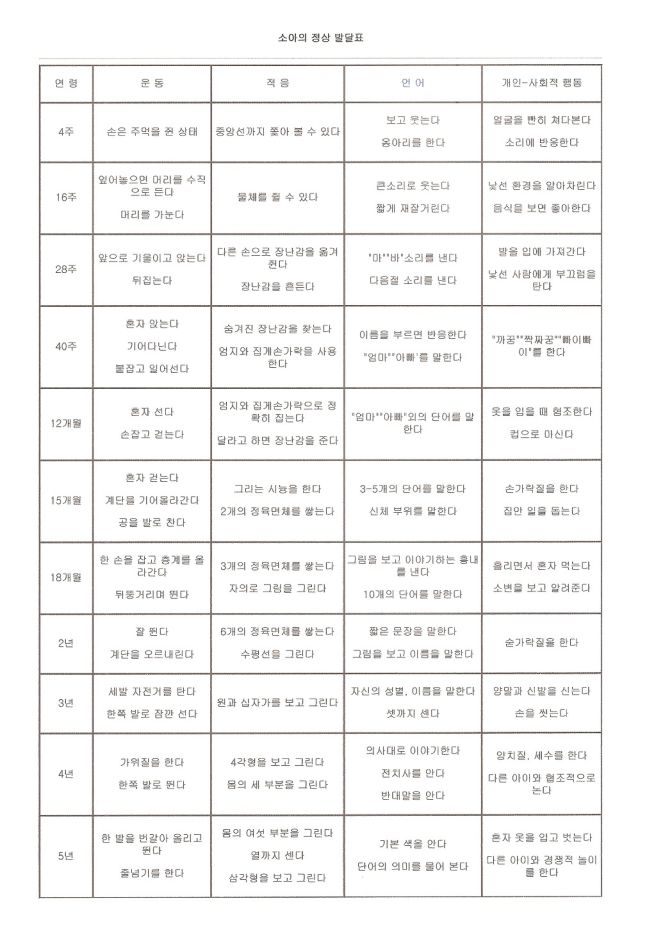

25. 성장/발달지연


원인 | |||||
성장지연 | 골격 | 가족성 저신장, // 터너증후군, 자궁내 성장지연 | |||
| 전신 | 체질성 성장지연, // 만성질환, 영양결핍, 정신사회적박탈 | |||
발달지연 | 전반적 발달지연 | 유전, 대사, 염색체 이상 신경손상: 출생 시 손상 정신/사회/환경: 자폐증, 자극결핍 | |||
| 국소적 발달지연 | 언어발달 지연: 청력 손상 운동발달 지연: 신경손상 - 뇌성마비 유전 - 근디스트로피 | |||
평가목표 1) 성장지연: 성장계측치의 백분위수와 성장패턴을 판단하고, 성장지연을 야기하는 유전, 환경요인 및 질환을 감별 -> 치료가 필요한 환자를 감별할 2) 발달지연: 발달 지연의 유무, 영역 및 정도를 확인하고 발달 지연의 원인을 감별 ->, 추가 검사와 전문 치료가 필요한 환자를 감별할 | |||||
구체적인 성과 | |||||
병력 청취
| 성장지표 확인 | 현재 상태: 백분위수 확인 출생 시: 부당경량아 여부 확인 성장 속도: 1년에 몇cm 성장 - 병적 저신장 확인(<4cm) | |||
| 성장패턴 확인 |
| |||
| 성장지연을 야기하는 유전, 환경요인 및 질환 확인 | 유전: 부모님 키 -> Target height 영양 및 만성 질환: 평소 식사량, 흡수장애(설사, 복통), 수면, 운동 2차 성징: 체질성 성장지연 확인 | |||
| 운동/언어/사회성 영역의 발달 지연 여부와 정도 확인 | 대근육/소근육/언어/사회성 영역 확인
| |||
| 발달 지연의 위험인자 확인 | 출생력(산전/산후), 과거력, 가족력(발달지연, 청력) | |||
| 발달 지연과 관련된 정신/사회/ 환경적 원인 확인 | 주 양육자, 자극 부족(대화 많이 하는지, 스마트폰 얼마나 보여주는지) 식사, 수면, 활동 등 | |||
신체 진찰 | 발달정도와 신체이상 유무 내분비 이상 유무 파악 | 외형: 터너/다운 증후군 등의 특징적인 외모 소견 내분비: 갑상샘, Tanner stage로 사춘기 진행 정도 | |||
| 성장정도 및 신체이상 유무 영유아발달검사 이경검사를 포함한 NEx | 머리 둘레 확인 영유아 발달검사: 덴버 발달검사 등 연령에 맞는 과제 수행 여부 확인하겠습니다 이경 - 청력 신경학적 검사 - 뇌성마비 등 | |||
진단 및 치료 | 성장지연 1. 원인질환 감별 위한 진단계획 수립 2. 원인에 따른 치료계획 수립
| 발달지연 1. 원인질환 감별 위한 진단계획 수립 2. 특수 검사가 필요한 환자 감별 _ 염색체검사 등 3. 필요한 경우 전문치료 의뢰 | |||
| 손목 X-ray: 골연령 측정 스크리닝 검사: 만성질환 배제 - CBC, 소변검사 내분비 검사, 성장호르몬 자극 검사, 염색체 검사 | 영유아 발달검사 청력 검사, 유전/염색체 검사, 뇌영상검사(뇌성마비) | |||
| 정상 변이: 추적 관찰, 상담 원인 치료: 내분비 질환, 만성 질환 | 재활의학과: 물리치료(대근육), 작업치료(소근육), 언어치료 소아정신과: 자폐스펙트럼, 사회성 장애 시 의뢰 | |||
환자교육 | 성장지연
| 성장을 촉진하는 생활환경 개선: 10시 이전 수면, 영양, 운동 신경쓰기 치료에 대한 정보: 성장H치료는 장기간 매일 밤 주사, 부작용에 대한 모니터링 필요 | |||
| 발달지연 | 치료에 대한 정보: 발달지연의 핵심은 조기발견 + 조기개입, 뇌의 가소성이 큰 시기에 자극 중요 | |||
| PPI | 보호자의 걱정에 대해 아이의 상태에 따라 안심시키기 소아 성장/발달 지연의 경우에는 장기간 관찰이 필요하기에 관심을 가지고 아이 상태에 맞게 검사나 치료 진행할테니 너무 걱정하지 마십시오. | |||
질환 | 질환 설명 | 병력청취 | 신체진찰 | 검사 | 치료 | |
정상발달 3+1 | ||||||
성장지연 | ||||||
1차성 | 골격형성 장애 | 뼈발달에 이상 | 이유없는 잦은 골절 등의 골격의 이상 |
| 전신 단순 방사선 촬영 | 정형외과적 수술 운동, 물리치료 |
| 염색체 이상 (터너) |
| 3세↓에서 성장 정상이다 감소, 골연력은 정상 익상경, 작은턱, 방패가슴 | 특징적인 외형 | 염색체 검사 | 성장 호르몬 E+P 공급 |
| 선천 대사 이상 | 태어날 때부터 대사기능에 문제 | 신생아 대사이상 선별검사에서 이상 쥐오줌 등 특이병력 |
| 혈중 암모니아 농도 개별 대사체 검사 | 부족한 대사체 보충 과잉 대사체 만드는 음식 섭취 제한 |
| 자궁내 성장지연 | 임신 중 태아가 잘 크지 못해 출생부터 작음 | 난산의 병력 NICU 입원력 주산기 사고 |
| Brain 초음파/MRI
| 태아 상태 따라서 치료 |
| 가족성 저신장 1 | 부모 체격이 작음 | 부모님이 키가 작음 성장 곡선의 이탈 X 골연령 정상 |
| 손목 X-ray 혈중 IGF-1 농도검사 | 경과 관찰 |
2차성 | 영양 결핍 1 |
| 영양 결핍 |
| 혈중 영양소 측정 | 영양 공급 |
| 만성질환 |
| 소화/호흡/신장 질환 |
| 각 질환에 맞는 검사 | 전신 질환에 맞는 치료 |
| 정신 사회성 저신장 |
| 정서 박탈/가정폭력 |
| 심리검사 | 심리 치료 |
| 성장H 결핍증 0+1 | 키 크는데 필요한 호르몬 부족 | 정상 신체 균형을 가진 병적 왜소증, 골연령감소 불규칙한 성장 속도 |
| 혈중 IGF-1 농도검사 인슐린 유발 저혈당 | 성장 호르몬 투여 |
| 갑상샘 저하증 |
| 황달, 변비, 수유지연, 두터운 피부 두꺼운 혀/짧은 사지, 목 |
| TFT | 갑상샘호르몬 |
| 거짓 부갑상샘 저하증 | 부갑상샘H은 충분히 나오는데 몸이 반응 X Ca↓:성장지연, 경련, 발작 | 경련, 손발목 경축 둥근 얼굴 짧은 목/손발가락 |
| 혈청 칼슘 PTH 농도측정 | Calcium gluconate |
| 체질성 성장지연 5+1 | 특별한 병은 아니고 조금 성장이 느린 편 | 늦은 사춘기 발현 가족력 성장 곡선의 이탈 X 골연령 감소 |
| 손목 X선 검사 혈중 IGF-1 농도검사 | 안심 |
발달지연 | ||||||
전반적 | 갑상샘 저하증 |
| 황달, 변비, 수유지연, 두터운 피부 두꺼운 혀/짧은 사지, 목 |
| TFT | 갑상샘호르몬 |
| 저산소 뇌병증 | 출산 전후로 뇌가 산소 부족으로 손상 | 난산 병력 NICU 입원력 주산기 사고 |
| Brain 초음파/MRI
| 산소 공급 영양 공급 보존적 치료 |
| 태아 알코올 증후군 | 임신 중 알코올 노출로 뇌/얼굴/성장이 영향 | 눈이 작고 모여있음 안검하수, 들창코 얇은 윗입술 |
| 임신 시 검사 | 임신 기간 동안 금주로 예방 |
| 다운 증후군 | 21번 염색체가 하나 더 존재 | 낮은 코, 넓은 미간 지능 저하, 비만 |
| 염색체 검사
| 주기적 검진 예방접종 |
| 터너 증후군 | X 염색체가 하나가 없거나 이상 | 3세↓에서 성장 정상이다 감소, 골연력은 정상 익상경, 작은턱, 방패가슴 | 특징적인 외형 | 염색체 검사 | 성장 호르몬 E+P 공급 |
언어 발달 1 | 발음장애 | 말소리 기능 저하 | 말은 할 수 있으나 발음이 정확치 않음 |
| 후두경으로 성대 이상 확인 | 안면 구강 기형 치료 언어 치료 |
| 의사소통 장애 | 이해 등 언어 기능 저하 | 4대 영역 중 언어만 느림
|
| 청력검사 뇌파검사 | 언어 치료 |
| 청력장애 | 청력에 문제 | 큰 소리가 나도 안놀람 신생아 청력검사 이상 |
| 청력검사 | 중이염 관련 수술 언어 교육 |
| 자폐 스펙트럼 1 | 뇌 발달 특성 때문에 사회적 소통과 행동발달 문제 | 친구 없음, 표정없음 반복행동, 물건 집착 |
| 청력검사 뇌파검사 | 부모 및 가족 교육상담 행동치료 |
| 체질 지연 | 성장 속도 늦지만 나중에 비슷 | 부모 사춘기 늦음 언어 외에 정상 |
| 손목 X선 검사 혈중 IGF-1 농도검사 | 안심 |
운동 능력 | 뇌성마비 | 뇌손상으로 운동능력과 발달지연 | 경직성 양측 운동 마비 편마비형 보행 |
| Brain 초음파/MRI | 재활운동 후방신경근절개술 |
| 척수 근위축증 | 운동신경이 약해져 근육이 점점 약해지며 지연 | 유전이상 근육긴장 저하 개구리 다리 자세 |
| 혈액 내 SMA 유전자 결손 확인 | 보존적 요법 |
| 언어 | 운동 | 사회성 |
| |
전반적 | ↓ | ↓ | ↓ | 발달지연 | |
국소적 | 언어 | ↓ | - | ↓ |
|
| 운동 | - | ↓ | - |
|
자폐 | X | - | X | 발달장애 | |
저신장 | 일차성(골연령 정상) | 이차성(골연령 감소) | ||
| 가족성 | 유전질환 | 가족성 | 유전질환 |
골연령 | 정상 | 정상 | ↓ | ↓ |
사춘기 발현 | 정상 |
| ↓ | ↓ |
성장 속도 | 정상 | ↓ | ↓ | 정상 |
특징 | 부모 신장 작음 | 염색체 검사 | 넓은 얼굴, 이마돌출 복부비만, 소악증 | 가족력 (+)
|
나이 | 정확한 생년월일이 어떻게 되나요? -> 만나이 확인: 36개월 미만에서는 몇개월/몇주인지 | |||||||||||||
O | 언제부터 성장/발달이 늦어진다고 느끼셨나요? 최근에 유독 느린거 같나요? 특별한 일이 있었나요? | |||||||||||||
성장 | 성장기록지 (자리에 없으면 가지고 오셨는지 물어보기) [현재] 키/체중/머리둘레 어떻게 되나요? [3백분위수 미만] r/o 저신장 [출생] 시 키/체중/머리둘레는 몇이였나요? [50/3.3/35] r/o 부당경량아 - 작년 한해동안은 얼마나 컸나요? [4cm/yr] r/o 병적 저신장 [청소년] 2차 성징은 있나요? (8세 이상) | |||||||||||||
발달: 성장지연 주소로 온 환아의 경우 간단하게 발달 잘하고 있는지 확인 | ||||||||||||||
발달 | Co | 이전에 할 수 있었던 것 중에서 지금 못하는게 있나요? 또래와 비교? | ||||||||||||
| C | 발달이 어떻게 느린가요? (특정 영역 문제 vs 전반적) 왜 느리다고 생각하시나요? [대운동, 적응, 언어, 사회] 각 항목마다 나이대 맞는 질문 2-3개 확인
| ||||||||||||
A | 자폐) 또래와 어울림 X/물건에 집착/제한되고 반복적 행동/표정 없음 청력) 큰소리가 나면 깜짝 놀라나요? 소리가 나는 쪽으로 고개를 돌리나요? | |||||||||||||
주산기
| 임신 시 어머니 나이가 어떻게 되시나요? 몇주 분만했나요? 분만 방식은? | |||||||||||||
| 임신 중 산전 진찰에서 이상소견 없었나요? (DM/HTN/태아 저산소증/선천감염) 임신 중 술, 담배, 의사랑 상의안된 약물, 커피 복용? 임신 중 엽산, 철분제 잘 복용? + 식사는 잘하셨나요? 분만 시 산모/아이에 문제는 없었나요? 신생아 대사이상검사/유전자검사/청력검사 이상? | |||||||||||||
외 | 입원/수술/머리 부딪힘 + catch down) 두통/구토/머리 외상 | |||||||||||||
과 | 크게 아팠던 적 있나요? 감염/경련/황달 예방접종은 제때 맞고있나요? | |||||||||||||
약 | 복용중인 약물? | |||||||||||||
사 | *비정상적 소견 나오면 디테일하게 묻기! 성장 환경) 누구와 함께 사나요? 주양육자? - 다양한 자극을 주고 있는지 식습관) 지금 모유/분유/이유식? 식습관은 어떤가요? 운동) 운동은 자주 하나요? 수면) 잠은 잘 자나요? 몇시에 자서 몇시에 일어나나요? | |||||||||||||
가 | 형제자매가 있나요? -> 성장/발달이 늦었던 아이가 있나요? -> 지금은 어떤가요? 부모) 초경/사춘기/성장 늦은 사람? 현재 키/체중 어떻게 되시나요? -> 예상 키 계산 [(부+모)/2 ± 6.5cm] 가족 중 선천 기형/지적장애/신경학적 질환 있으신 분 있나요? | |||||||||||||
PEx | 신체진찰 X 아이랑 같이 오셨나요? 제가 한번 확인해보도록 하겠습니다. 외형 이상 있는 경우 사진 제공 | |||||||||||||
진단 | 공감/안심) 아이의 키/발달이 늦어서 걱정되시겠습니다. 성장 발달 설명) 백분위수/성장속도/발달상태 쉽고 구체적으로 설명 추정진단) 따라서 이를 종합해 보았을 때 ~~가 의심됩니다. 기전설명) 해당 질환은 ~~ 으로 성장/발달이 지연될 수 있습니다. 감별진단) 하지만 이 외에도 ~~등의 질환도 배제할 수 없어 추가적인 검사가 필요합니다. | |
검사, 치료 | 기본 검사 | 성장: 손목 X선 검사(뼈나이), 혈액검사, 성장호르몬 발달: 영유아발달검사, 언어/청력/지능검사 머리둘레↓: 뇌 초음파/MRI |
| 치료 | 성장: 경과 관찰, 성장호르몬 주사 발달: 운동/언어/행동 치료 + 자폐) 가족 교육
1. 운동 치료 (Physical/Occupational Therapy) 아이의 대근육과 소근육 발달을 도와 스스로 몸을 가누고 움직이게 합니다. 뒤집기, 앉기, 걷기 등 신체 기능의 독립적인 조절 능력을 기르는 것이 목표입니다.
2. 언어 치료 (Speech-Language Therapy) 자신의 의사를 표현하고 타인의 말을 이해하는 소통의 기술을 배웁니다. 정확한 발음뿐만 아니라 표정, 몸짓 등 상호작용 전반의 발달을 지원합니다.
3. 행동 치료 (Behavioral Therapy) 일상생활에 어려움을 주는 행동을 수정하고 사회적 규칙을 익히도록 돕습니다. 긍정적인 행동은 늘리고 부적절한 행동은 줄여 아이가 환경에 잘 적응하게 합니다. |
교육 | 안심) 아이의 경우 조기 진단이 매우 중요하기에 일찍 잘 오셨습니다. 조기에 치료를 시작한다면 삶의 질을 높일 수 있습니다. 부모님의 잘못이 아니니 너무 자책하지 마세요.
예상키 설명) [(부+모)/2 ± 6.5cm]
회피/교정) 사회력 + C 성장: 10시 이전에 잘 수 있도록 하고 충분한 수면 시간 확보 식사 골고루 먹고 운동도 줄넘기, 농구 등 자주 하도록 교육 (영유아) 모유-이유식-고형식 순으로 골고루 잘 먹도록 교육 발달: 할머니랑 살면 바쁘더라도 외부 활동 시키고 또래 친구와 많이 놀도록 다양한 자극에 노출
접종) 예방접종 시기에 맞춰 잘 맞아주세요
검사) 소아 발달/성장은 한두번의 검사로 결정되는 것은 아니고, 꾸준한 추적관찰, 반복검사와 중재가 필요합니다. 따라서 정기적으로 계속 내원해주시는 것이 중요합니다. 검사 마치는대로 설명드리도록 하겠습니다.
궁금하신 내용 있으실까요? | |
7. C (Character: 성장) | [간략한 발달 사항 확인] "성장 확인을 위해 발달 사항을 여쭤보겠습니다. 적절한 시기에 고개를 가누고, 걷고, 옹알이를 잘 하였습니까?" | [상세 발달 사항 확인 1] 대운동: 3개월 고개 가누기 / 4개월 뒤집기 / 5개월 기기 / 7개월 앉기 / 9개월 서기 / 11개월 걸음마 / 2세 뛰기 |
8. C (Character: 발달) | [영역별 대표 질문] "사회성이나 언어 발달에 있어 특별히 지연된 점은 없었습니까?" | [상세 발달 사항 확인 2] 적응: 4개월 잡기 / 7개월 물건 옮기기 / 10개월 집기 / 12개월 물건 주기 / 15개월 블록 쌓기 / 2세 낙서하기 |
9. C (Character: 소통) | [추가 확인] "말을 잘 알아듣고 눈 맞춤은 원활하게 이루어집니까?" | [상세 발달 사항 확인 3] 언어: 7개월 옹알이 / 10개월 마마빠빠 / 18개월 단어 10개 / 2세 문장 구사 큰 소리가 나도 돌아보지 않습니까? (청력) |
10. C (Character: 사회) | [일상 생활 체크] "혼자 숟가락질이나 세수 등은 잘 수행합니까?" | [상세 발달 사항 확인 4] 사회성: 2개월 웃기 / 10개월 까꿍 놀이 / 12개월 옷 입는 자세 취하기 / 15개월 가리키기 / 2세 숟가락 사용 / 4세 세수하기 / 5세 혼자 옷 입기 |
